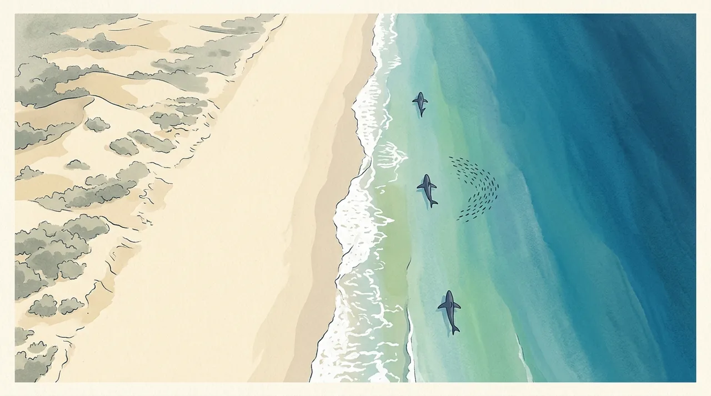
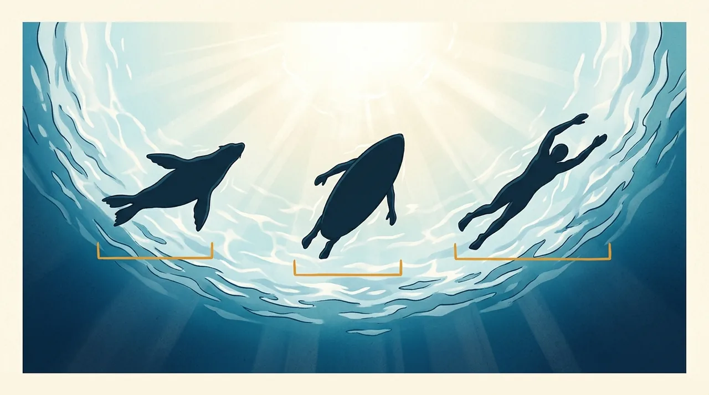

White sharks off Sydney
When they pass, how big they are, where they go, and how often they meet people. This page gathers the tagging studies, the NSW catch reports and the incident records, for people who swim and dive between South Steyne and Shelly Beach. Every figure is linked to its source at the bottom.
Produced with AI. Every care has been taken to make this page accurate, using the most advanced AI models available at the time of writing, but it may still contain errors. Found one? Contact me on Messenger.
The animal
The white shark, Carcharodon carcharias, is born big and grows slowly. A pup is already longer than a child is tall. Males take about 7 to 11 years to mature and females about 12 to 17. Adults are rare along this coast: of 577 white, tiger and bull sharks caught in the NSW nets since 1990, only 17 were longer than 3.6 m (Butcher 2025).
How big, on one scale
Lengths: at birth about 1.2 to 1.5 m (NSW DPI); Sydney median from the 32 sharks hooked on Sydney SMART drumlines, March 2022 to June 2025 (NSW DPIRD reports); maturity and maximum from the national shark report card (FRDC 2023) and the 2013 recovery plan.
White sharks keep their bodies warmer than the water around them, which lets them work in cool seas. Their eyes are a different matter. They see little or no colour, and about a sixth of the detail we do (Ryan 2021). That comes back in Sharks and people.
How many are there?
Nobody can count sharks from a boat, so CSIRO counted relatives. Tissue from juveniles was DNA-tested to find half-brothers and half-sisters. In a small population two juveniles often share a parent; in a big one they rarely do. The share of related pairs gives the number of adults.
The eastern population, as estimated for 2017
Each square is ten sharks. Total about 5,460, with a wide range of 2,909 to 12,802. The eastern population runs from eastern Victoria to central Queensland and across to New Zealand. Source: Bruce et al. 2018, CSIRO and the NESP Marine Biodiversity Hub.
Why so many young ones?
Because a white shark is young for a long time. A female does not breed until she is 12 to 17 years old, and a male until 7 to 11. Every year a new batch of pups joins the young, and each one stays there for a decade or more before it counts as an adult. About 73% of the young survive each year, so many never get that far. The result is about six young sharks for every adult.
What counts as a juvenile?
Scientists sort white sharks by length, because age is hard to read. Up to 1.75 m is a shark in its first year. From 1.75 to 3 m is a juvenile, roughly one to five years old or a little more. From 3 m until it can breed is a sub-adult. Adults are males over about 3.6 m and females over about 4.6 m (Bruce 2019; Lee 2021). The grey squares are everything short of adult.
Where the adults of the east coast spend their year, and where the females give birth, has never been found. The few large sharks tracked from northern NSW kept to the edge of the continental shelf and the open ocean (Coxon 2022).
One population or two?
The count treats eastern Australia and New Zealand as one population, separate from the sharks of South and Western Australia. A 2025 study of about 650 sharks found no genetic line between the two (Clark 2025), so that model is being looked at again.
Over the years
There is no year-by-year count of white sharks. There is the one genetic estimate, for 2017, and there are the catch records of the shark nets, which have fished for decades. Catch records follow the number of sharks only roughly, because the gear, the season and the record keeping all changed along the way.
Adult white sharks in the eastern population, 2000 to 2017
This is the only trend estimate there is, and it covers adults only. The 2018 genetic study gave two things: the number of adults in 2017, and their rate of change since the early 2000s, minus 3% a year, give or take 3%. The lines here are drawn for this page by running those rates back from the 2017 figure; the study did not publish a year-by-year series, and it took the two figures from slightly different versions of its model. So read the shape: most likely a slow decline, possibly flat, almost certainly not a strong rise. Nothing is known for juveniles, and no estimate exists after 2017. Source: Bruce et al. 2018.
Queensland nets: white sharks caught per net per year
A fall of 92% across five decades, in the same eastern population. These are the first and last years, the two figures the study gives; the years between are not shown. Species were recorded reliably only from about 1996, and the gear varied in the early decades. Source: Roff et al. 2018.
White sharks in the 51 nets, Newcastle to Wollongong, by season
Whole program, not Sydney alone. The last two seasons were a month shorter. A grey season has no separate figure for that shark: tiger and bull sharks were reported season by season only from 2014–2015, and in the fifteen seasons before that the nets took 35 tiger and 6 bull sharks in all. Source: NSW DPIRD Shark Meshing Program annual performance reports; NSW DPI 2016 review of the program.
The long decline
In the NSW nets the catch rate of white sharks fell through the first four decades of records, to about a third of its 1950s level. From about 1990 it crept back up to the level of the early 1980s (Reid 2011). The national shark report card says the east coast stock fell considerably before protection, though by less than the 90% once estimated (FRDC 2023).
Since protection
White sharks have been protected since the late 1990s. NSW net catches stepped up from single figures to around twenty a season after 2014–2015, and have swung between 12 and 42 since. The reports do not give a cause. A shark born after protection takes 12 years or more to breed, so a gain among the young would show first in catches of juveniles like these.
What the genetics say
The 2018 study put the trend in adults since the early 2000s at minus 3% a year, give or take 3%: no different from flat, and very unlikely to be growing by more than 3% a year (Bruce 2018). A 2025 study found the number of breeding animals still very low (Blower 2025). A national re-count is under way. No new figure had been published when this page was written.
Where they go
Young white sharks make a loose yearly round trip along the east coast. In winter and spring most are between central NSW and southern Queensland. In summer and autumn most are between central NSW and eastern Victoria, with some reaching Tasmania. Central NSW has some in every month (Bruce 2019; Spaet 2020).
The yearly round trip of juvenile white sharks
Schematic, drawn from satellite and acoustic tracking of immature white sharks tagged in NSW and Victoria (Bruce et al. 2019; Spaet et al. 2020). The coast is simplified. Individual sharks do not all follow the pattern.
Past Sydney twice a year
A line of receivers on the seabed off Bondi heard 37 tagged sharks cross 119 times. They went south mainly from November to March and north from April to June, with few crossings from August to October (Bruce 2019).
Two nurseries
Juveniles of about 1.7 to 3.2 m gather off Port Stephens, about 150 km up the coast from Sydney, mostly from October to January. They use the surf zone of Stockton Beach and Bennetts Beach in water 1 to 5 m deep, and the sea out to about 120 m. A second nursery lies off Corner Inlet and Ninety Mile Beach in Victoria, used mainly from December to April. These are gathering places for the young, not birthing grounds. Nearly half the sharks tagged at Port Stephens came back in later years.
The long hauls
A few leave the pattern. One 3.2 m female swam the 1,800 km from Bass Strait to New Zealand in a near-straight line at about 4.7 km an hour. Others reached New Caledonia and the Gulf of Papua. One shark made at least two return trips to Western Australia, more than 39,700 km in about 32 months (Spaet 2020).

When are they off Sydney?
Two kinds of gear record white sharks off Sydney beaches. SMART drumlines are baited lines that are set each morning all year; a hooked shark is tagged and released. The shark nets are in the water from 1 September to the end of March. Between them they give a calendar.
White sharks recorded off Sydney beaches, by month
Palm Beach to Cronulla. Counted from the individual catch records in the NSW DPIRD annual reports. Small numbers: read the shape, not the single bars. Grey months have no net data at all, so a gap there says nothing. One tiger shark hooked off Sydney has no readable month and is left out.
The two records agree on the quiet end of the year: January to April. Winter shows up only on the drumlines, because the nets are out. The sharks hooked in June fit the northward run past Bondi from April to June, and the spring net catches fit the southward run.
White sharks hooked along the whole NSW coast, by month
Captures on SMART drumlines at 20 places from Kingscliff to Merimbula, July 2022 to June 2025, three years added together, counted from the dated records in the NSW DPIRD annual reports. Eight records whose month could not be read are left out. Most white sharks are hooked on the mid-north and north coast, where the peak comes in July to September.
Water temperature is a guide, not a forecast
Tracked sharks were found in sea surface temperatures from 10 to 27 °C, with 71% of positions between 17 and 23 °C and a peak near 20 °C (Lee 2021). On the drumlines, catch rates were highest between 15 and 21 °C and fell away above that (Cappa 2026).
The day's conditions tell you little
A study of 444 tagged white sharks and 21 beach receivers tested month, time of day, water temperature, tide, swell and moon. Together they explained 1.8% of when a shark turned up. Which beach it was explained 17.3% (Spaet 2020b). Place matters far more than the day.
How often, compared with the rest of the coast?
The drumlines make a fair comparison, because every region fishes the same gear: about 15 lines, set most mornings of the year, roughly 500 m off the beach.
White sharks hooked on SMART drumlines, four years to June 2025
Capture events, July 2021 to June 2025, north to south. Counts include sharks caught more than once. Most regions began between November 2021 and April 2022 (Sydney in March 2022), and Ballina fishes 20 lines. Each shark is drawn to its own scale, so compare regions within one view. Source: NSW DPIRD SMART drumline annual reports.
Tagged sharks are a sample, not a census. A beach with no alert is not a beach with no shark: water samples tested for white shark DNA picked them up more often than either the drumlines or the receivers did (NSW DPIRD 2026, citing Clark 2025b).
Where in the water?
Tags that log depth show young white sharks living mostly in the upper part of the sea over the continental shelf, and changing their habits between day and night (Spaet 2022, twelve immature sharks tagged off NSW).
Depth by day and by night
Averages from the four tags that were recovered with their full records. By day the sharks held a steady depth; at night they moved up and down and came close to the surface. Across all twelve tags the sharks spent 22% of their time in the top 10 m and 81% in the top 50 m, and the deepest dive was 632 m. Source: Spaet et al. 2022.
Along the beach
The drumlines and receivers sit about 500 m from shore in 8 to 15 m of water. White sharks are hooked there at any time of the working day: in 2024–2025, 41% between 6 and 10 am, 40% between 10 am and 2 pm and 19% later, when fewer lines are fishing. Nothing measures the night or the surf zone itself.
Passing, not staying
After release, sharks head out to sea. Ten days later 77% were still more than 1.9 km offshore, and on average a released shark was not heard near any beach receiver for about four months (Butcher 2023).
Sand, mostly
Cameras fixed to 13 juvenile white sharks recorded more than 68 hours near NSW beaches. Most of the time the sharks cruised over sand, and active hunting was uncommon (NSW Government, Aug 2026).
What they eat
The stomachs of 40 white sharks from the nets between Newcastle and Wollongong are the nearest thing to a Sydney menu (Grainger 2020). The young sharks off our beaches are fish eaters. Australian salmon was the most important single prey. Stargazers, stingarees and eagle rays show they also feed on the bottom.
Diet of white sharks from the NSW nets
Share of the diet by an index that combines how often a prey was found, how many and how heavy. 40 stomachs, sharks of 1.6 to 4.7 m, most caught in spring. Dolphin was found only in sharks longer than about 2.2 m. Source: Grainger et al. 2020, Table 1.
As white sharks grow past about 3 m, marine mammals become a larger part of the diet, and the largest gather around seal colonies. There is no stomach study of adult white sharks from eastern Australia.
Sharks and people
The Australian Shark-Incident Database, kept by Taronga, records every known case back to 1791. The counts below are unprovoked incidents attributed to white sharks, to June 2026. An incident includes cases where nobody was hurt, such as a bitten board.
White shark incidents by decade: Sydney's coast, harbour and bays
Each coloured block carries its count. The area runs from Palm Beach to Cronulla and takes in the harbour, Botany Bay and the rivers. The last row covers six and a half years. Cases before 1900 are counted in the line above the chart and not drawn. Species for the early cases were judged long afterwards, mostly from the wounds and the place. Source: Australian Shark-Incident Database, version of 2 Sep 2026; counted for this page.
The long quiet
Of the 34 white shark cases on record in Sydney, 22 were swimmers between 1912 and 1953. From January 1962 to February 2000 the record holds no white shark incident in Sydney at all. Nobody was hurt by one between 1953 and 2009, and nobody was killed between 1936 and 2022.
Since 2020
Four cases: a scuba diver with minor cuts at Magic Point (October 2020), a swimmer killed at Little Bay (February 2022), a surfer killed at Long Reef (September 2025) and a swimmer badly hurt at Coogee (June 2026). The Coogee species is the database's entry; no official statement confirming it was found.
Manly
The Manly entries are from another era: Queenscliff and North Steyne in 1934 and South Steyne in 1936. Nothing has been attributed to a white shark at Manly since. The surfer bitten at North Steyne in January 2026 was bitten by a bull shark, as were the two other Sydney cases identified that week.
Sydney is one short stretch of a long coast. The next chart widens to all of NSW, where most white shark incidents happen on the north and mid-north coast. Sydney had 4 of the state's 28 white shark incidents in the 2000s, 3 of the 43 in the 2010s and 4 of the 18 since 2020.
White shark incidents year by year since 1980, Tweed to the Victorian border
The whole NSW coast. Each coloured block carries its count, and the figure above a bar, or after the equals sign, is the year's total. Pick a shark and an outcome; one incident is always drawn the same size. The dots mark that year's Sydney cases. Part of the rise after 2000 is better record keeping: bitten boards with nobody hurt are now logged, and earlier they often were not. The injured and fatal blocks are the steadier guide. 2026 runs to June. Source: Australian Shark-Incident Database, version of 2 Sep 2026; counted for this page.
Two things are true at once. White shark incidents in NSW rose from about one every two years in the 1980s and 1990s to about four a year in the 2010s, and have run at about three a year since 2020. And the last six years have been deadlier: six deaths in NSW since 2020, against three in the whole of the 2010s and none in the 2000s. Researchers agree on the rise and not on its cause. More people in the water for more of the year, in wetsuits, is part of it. One analysis suggests the rate moves in long cycles (Bradshaw 2021).
Who was involved: white shark incidents, NSW since 1990
Unprovoked incidents. The database records spearfishing cases as provoked, so they are not counted here. Source: Australian Shark-Incident Database, version of 2 Sep 2026; counted for this page.
For swimmers
NSW has six white shark incidents with swimmers since 2000: Kiama 2000 (not hurt), Tathra 2014 (fatal), Congwong Beach 2018 (injured), Little Bay 2022 (fatal), near Crescent Head 2022 (injured) and Coogee 2026 (injured). That is few, among the four million people who swim on the NSW coast each year. But the outcome is worse for a person in the water than for one on a board. Across the Australian record, about 88% of people bitten by a white shark while on a board or craft survived, against about 45% of those in the water (Tucker 2022).
For scuba divers
The NSW record holds two unprovoked white shark cases with divers: Julian Rocks, Byron Bay, in 1993 (fatal) and Magic Point in 2020 (minor cuts). Nationally, 28 divers and snorkellers were killed by sharks between 1960 and 2017, 19 of them in South and Western Australia. 21 of the 28 were collecting seafood: spearfishing, or diving for abalone or scallops. Six were near seal colonies (Lippmann 2018).
How rare, against other things on the coast
Deaths per year on the NSW coast. Drowning: ten-year average to 2023 (Surf Life Saving NSW 2023). Sharks: 2016 to 2025 (Australian Shark-Incident Database). The groups are not the same size and do not spend the same hours in the water, so this compares totals, not your own odds.
Why a bite happens

SealSurfer paddlingSwimmerPoor eyesight is part of it
White sharks see little or no colour. The eyes of the juveniles measured resolve about a sixth of the detail ours do. The authors of the silhouette study say mistaken identity is unlikely to explain every bite. Many bites are single and are not followed up, which fits a shark testing what it has found. A test bite from a large shark is still a grave injury.
Size matters
The sharks in fatal cases were large: a median of about 4 m in the database, and 3.5 to 4.5 m in the three recent Sydney cases. The sharks usually recorded off our beaches are about 2 m. Both statements are true. The common shark here is a young fish eater, and the serious bites come from the uncommon larger ones.
Mostly they pass by
Researchers followed 108 white sharks by drone off NSW beaches. The sharks swam along the beach behind the surf at walking pace. One made a brief approach to a surfer; none chased anyone (Colefax 2020). In 36,384 research drone flights over 42 NSW beaches, a shark of any kind was seen on fewer than one flight in a hundred, and 34 of the 281 sharks seen were white sharks (Monteforte 2022).
What changes the odds of a white shark being there
A 2020 review for the Queensland Government checked the ten most common shark tips against the science. It rated one as strongly supported: keep away from bait fish and feeding activity. The table sets out what the studies support. It describes where sharks are more likely to be. It does not promise what happens if you follow it.
| Sign or habit | Evidence | What the studies say |
|---|---|---|
| Bait fish schools, diving birds | Strong | Fish schools were the main reason white sharks came into the surf zone in the NSW drone study, and the sharks sped up around them. |
| A whale carcass nearby | Strong | White sharks near stranded carcasses were larger on average and swam faster and less directly (Tucker 2021). |
| Spearfishing, carrying catch, fishing close by | Strong | Three in four divers killed in Australia were collecting seafood. |
| Seals | Strong, for large white sharks | Six of 28 diver deaths were near seal colonies. Sydney has no large colony. |
| Cooler water | Moderate | Catches and drone sightings of white sharks go up in cooler water. On a given day it predicts little. |
| Rain, murky water, river mouths | A bull shark sign | Bull sharks turn up off beaches after heavy rain and in warm water. For white sharks the link is unclear. |
| Dawn and dusk | Weak | Of 103 timed white shark incidents in NSW, 64 fell between 8 am and 5 pm. Low light does make a shark, or a person in trouble, harder to see. |
| Swimming with others | Weak for avoiding a bite | No evidence that it keeps sharks away. Its value is that someone can help and raise the alarm. |
| Dolphins about | Refuted as a comfort | Dolphins and sharks are often in the same water, after the same fish. |
| Wetsuit colour | No evidence | White sharks are probably colour-blind. Outline against the surface is what their eyes pick up. |
Sources: Hoel and Chin 2020; Colefax 2020; Lippmann 2018; Smoothey 2023; Ryan 2021; time of day counted from the Australian Shark-Incident Database. For devices, see Do shark deterrents work?
Between South Steyne and Shelly Beach
What is on record close by
The North Steyne net caught four white sharks in twelve seasons (October 2014, March 2015, October 2015, October 2023), Queenscliff one and Freshwater one. All were between 1.6 and 2.4 m. The Manly net caught none. A drumline at Queenscliff hooked a 2.05 m male in October 2024.
What is not on record
No government report or published study was found of a white shark inside Cabbage Tree Bay, at Shelly Beach or off North Head. That is an absence of records, not a finding that they never come in. The bay has no net, no drumline and no receiver of its own.
What covers this stretch
Nets at Manly and North Steyne from September to March, drumlines from Manly to Turimetta, a tagged-shark receiver off North Steyne since 2022, and drones over Sydney beaches. Each one samples or watches. None is a barrier, and a tagged-shark alert covers only tagged sharks within about 500 m of a receiver.
How we know
- SMART drumline. A baited hook under a buoy that sends an alert the moment something takes it. A crew arrives, tags the shark and releases it. The lines are set each morning and taken in each evening.
- Tag. An acoustic tag sends a coded ping that the listening stations can hear. Some sharks also carry a satellite tag that reports whenever the fin breaks the surface. NSW scientists were tracking 1,698 white sharks in August 2026.
- Listening station. A buoy about 500 m off the beach that hears any tagged shark within about 500 m and sends an alert to the SharkSmart app. Sydney has six on the ocean beaches, at Palm Beach, North Narrabeen, North Steyne, Bondi, Maroubra and Cronulla, and since 2026 two in the harbour.
What the gear has been shown to do
The one published review of the whole NSW program could not find a difference in incident rates between netted and un-netted beaches since the 2000s. It recorded no incident at a beach while drones or SMART drumlines were working there, and incidents did continue at beaches with listening stations. The authors note that with events this rare, effects are hard to prove either way (Huveneers 2024).
Counting relatives
The population figures come from DNA. If two young sharks share a mother or father, that parent was alive and breeding when both were conceived. Count enough pairs and the number of adults follows. The 2018 estimate used 214 sharks and found 73 pairs of half-siblings (Bruce 2018).
Limits worth knowing
Drumlines and receivers watch a band about a kilometre wide, mostly in daylight. Nets are out in winter. Tagged sharks are a sample. The incident database depends on what was reported and, for old cases, on judgement about species made decades later.
Videos and links
Short official videos from NSW Fisheries and CSIRO. Nothing loads from YouTube until you tap one.
- SharkSmart: shark activity, the live alerts from drumlines, receivers and drones, also in the SharkSmart app.
- SharkSmart: SMART drumlines and the shark nets, with every annual report and catch list.
- CSIRO: can white shark numbers be estimated? The population count, explained by the people who made it.
- CSIRO: white shark research findings, on nurseries and tracking.
- Taronga: Australian Shark-Incident Database, and the public data file used for the counts on this page.
- International Shark Attack File, Florida Museum, for the world picture.
- NSW Fisheries: the full Shark Management Program playlist.
Studies
- Blower DC, Clark ZSR, Fish JJ, Miller AD, Sherman CDH, Weeks AR, Butcher PA. 2025. Genomic evaluation of Australian sub-adult white sharks Carcharodon carcharias reveals kin aggregation with low population size. Marine Ecology Progress Series 769: 87–105. doi:10.3354/meps14926
- Bradshaw CJA, Meagher P, Thiele MJ, Harcourt RG, Huveneers C. 2021. Predicting potential future reduction in shark bites on people. Royal Society Open Science 8(3): 201197. doi:10.1098/rsos.201197
- Bruce B, Bradford R, Bravington M, Feutry P, Grewe P, Gunasekera R, Harasti D, Hillary R, Patterson T. 2018. A national assessment of the status of white sharks. NESP Marine Biodiversity Hub, CSIRO. Report (PDF)
- Bruce BD, Harasti D, Lee K, Gallen C, Bradford R. 2019. Broad-scale movements of juvenile white sharks Carcharodon carcharias in eastern Australia from acoustic and satellite telemetry. Marine Ecology Progress Series 619: 1–15. doi:10.3354/meps12969
- Butcher PA, Lee KA, Brand CP, Gallen CR, Green M, Smoothey AF, Peddemors VM. 2023. Capture response and long-term fate of white sharks (Carcharodon carcharias) after release from SMART drumlines. Biology 12(10): 1329. doi:10.3390/biology12101329
- Butcher PA, Broadhurst MK, Peddemors VM, McGarty AJ, Cullis BR. 2025. Hooking efficiencies of SMART drumlines and their possible deployment rates vs gillnets for bather protection. Frontiers in Marine Science 11: 1513232. doi:10.3389/fmars.2024.1513232
- Cappa P, Morris SG, Niella Y, Kelaher BP, Butcher PA. 2026. Quantifying SMART drumline catches in an Australian bather protection program. Frontiers in Marine Science 13: 1900316. doi:10.3389/fmars.2026.1900316
- Clark ZSR, Butcher PA, Weeks AR, Huveneers C, Toomey M, Holland OJ, Fish JJ, Sherman CDH, Blower DC, Miller AD. 2025. Genomic assessment of Australian white sharks (Carcharodon carcharias) challenges previous evidence of population subdivision. Diversity and Distributions 31(2): e13946. doi:10.1111/ddi.13946
- Colefax AP, Kelaher BP, Pagendam DE, Butcher PA. 2020. Assessing white shark (Carcharodon carcharias) behavior along coastal beaches for conservation-focused shark mitigation. Frontiers in Marine Science 7: 268. doi:10.3389/fmars.2020.00268
- Coxon JL, Butcher PA, Spaet JLY, Rizzari JR. 2022. Preliminary data about habitat use of subadult and adult white sharks (Carcharodon carcharias) in eastern Australian waters. Biology 11(10): 1443. doi:10.3390/biology11101443
- Grainger R, Peddemors VM, Raubenheimer D, Machovsky-Capuska GE. 2020. Diet composition and nutritional niche breadth variability in juvenile white sharks (Carcharodon carcharias). Frontiers in Marine Science 7: 422. doi:10.3389/fmars.2020.00422
- Hamady LL, Natanson LJ, Skomal GB, Thorrold SR. 2014. Vertebral bomb radiocarbon suggests extreme longevity in white sharks. PLoS ONE 9(1): e84006. doi:10.1371/journal.pone.0084006
- Harasti D, Lee K, Bruce B, Gallen C, Bradford R. 2017. Juvenile white sharks Carcharodon carcharias use estuarine environments in south-eastern Australia. Marine Biology 164: 58. doi:10.1007/s00227-017-3087-z
- Hillary RM, Bravington MV, Patterson TA, et al. 2018. Genetic relatedness reveals total population size of white sharks in eastern Australia and New Zealand. Scientific Reports 8: 2661. doi:10.1038/s41598-018-20593-w
- Hoel K, Chin A. 2020. The scientific basis for global safety guidelines to reduce shark bite risks: a review of the latest science. Report to the Queensland Department of Agriculture and Fisheries, James Cook University. Report (PDF)
- Huveneers C, Blount C, Bradshaw CJA, Butcher PA, Lincoln Smith MP, Macbeth WG, McPhee DP, Moltschaniwskyj N, Peddemors VM, Green M. 2024. Shifts in the incidence of shark bites and efficacy of beach-focussed mitigation in Australia. Marine Pollution Bulletin 198: 115855. doi:10.1016/j.marpolbul.2023.115855
- Lee KA, Butcher PA, Harcourt RG, Patterson TA, Peddemors VM, Roughan M, Harasti D, Smoothey AF, Bradford RW. 2021. Oceanographic conditions associated with white shark (Carcharodon carcharias) habitat use along eastern Australia. Marine Ecology Progress Series 659: 143–159. doi:10.3354/meps13572
- Lippmann J. 2018. Fatal shark attacks on divers in Australia, 1960–2017. Diving and Hyperbaric Medicine 48(4): 224–228. doi:10.28920/dhm48.4.224-228
- Monteforte KIP, Butcher PA, Morris SG, Kelaher BP. 2022. The relative abundance and occurrence of sharks off ocean beaches of New South Wales, Australia. Biology 11(10): 1456. doi:10.3390/biology11101456
- Reid DD, Robbins WD, Peddemors VM. 2011. Decadal trends in shark catches and effort from the New South Wales, Australia, Shark Meshing Program 1950–2010. Marine and Freshwater Research 62(6): 676–693. doi:10.1071/MF10162
- Riley M, Meagher P, Huveneers C, Leto J, Peddemors VM, Slip D, West J, Bradshaw CJA. 2022. The Australian Shark-Incident Database for quantifying temporal and spatial patterns of shark-human conflict. Scientific Data 9: 378. doi:10.1038/s41597-022-01453-9
- Roff G, Brown CJ, Priest MA, Mumby PJ. 2018. Decline of coastal apex shark populations over the past half century. Communications Biology 1: 223. doi:10.1038/s42003-018-0233-1
- Ryan LA, Slip DJ, Chapuis L, Collin SP, Gennari E, Hemmi JM, How MJ, Huveneers C, Peddemors VM, Tosetto L, Hart NS. 2021. A shark's eye view: testing the 'mistaken identity theory' behind shark bites on humans. Journal of the Royal Society Interface 18: 20210533. doi:10.1098/rsif.2021.0533
- Smoothey AF, Niella Y, Brand C, Peddemors VM, Butcher PA. 2023. Bull shark (Carcharhinus leucas) occurrence along beaches of south-eastern Australia: understanding where, when and why. Biology 12(9): 1189. doi:10.3390/biology12091189
- Spaet JLY, Patterson TA, Bradford RW, Butcher PA. 2020. Spatiotemporal distribution patterns of immature Australasian white sharks (Carcharodon carcharias). Scientific Reports 10: 10169. doi:10.1038/s41598-020-66876-z
- Spaet JLY, Manica A, Brand CP, Gallen C, Butcher PA. 2020b. Environmental conditions are poor predictors of immature white shark Carcharodon carcharias occurrences on coastal beaches of eastern Australia. Marine Ecology Progress Series 653: 167–179. doi:10.3354/meps13488
- Spaet JLY, Butcher PA, Manica A, Lam CH. 2022. Spatial dynamics and fine-scale vertical behaviour of immature eastern Australasian white sharks (Carcharodon carcharias). Biology 11(12): 1689. doi:10.3390/biology11121689
- Tucker JP, Colefax AP, Santos IR, Kelaher BP, Pagendam DE, Butcher PA. 2021. White shark behaviour altered by stranded whale carcasses: insights from drones and implications for beach management. Ocean & Coastal Management 200: 105477. doi:10.1016/j.ocecoaman.2020.105477
- Tucker JP, Santos IR, Kelaher BP, Green M, Clark GF, Butcher PA. 2022. Increased shark bite survivability revealed by two centuries of Australian records. Scientific Reports 12: 14121. doi:10.1038/s41598-022-16950-5
Government reports and data
- Meagher P. 2026. Australian Shark-Incident Database, public version of 2 Sep 2026. Taronga Conservation Society Australia. Zenodo, CC BY 4.0. doi:10.5281/zenodo.22262542. Used for every incident count on this page.
- NSW DPIRD. Shark Meshing (Bather Protection) Program annual performance reports, 2014–2015 to 2025–2026. sharksmart.nsw.gov.au/shark-nets. Used for net catches by season, month and beach, for white, bull and tiger sharks.
- NSW DPI. 2016. Five-year review of the 2009 Joint Management Agreements for the NSW Shark Meshing (Bather Protection) Program. Used for tiger and bull shark net catches before 2014–2015, which are given only as a combined total.
- NSW DPIRD. NSW SMART drumline annual reports, 2021–2022 to 2024–2025. sharksmart.nsw.gov.au. Used for drumline catches by region and month, sizes and time of day.
- NSW DPI. 2020. Shark listening stations: key results, and Helicopters: key results (fact sheets). Listening stations (PDF), Helicopters (PDF)
- NSW Government. 30 Aug 2026. Extra shark surveillance coming (ministerial release). nsw.gov.au. Used for the number of sharks tagged, the harbour listening stations and the camera-tag footage.
- FRDC. 2023. Shark report card: white shark. Status of Australian Fish Stocks. Report (PDF)
- Department of Sustainability, Environment, Water, Population and Communities. 2013. Recovery plan for the white shark (Carcharodon carcharias). legislation.gov.au
- CSIRO. White shark research findings, and Can white shark numbers be estimated? csiro.au
- NSW DPI. White shark (species profile). dpi.nsw.gov.au. Used for length at birth.
- Surf Life Saving NSW. 2023. NSW Coastal Safety Report 2023. Report (PDF). Used for drowning deaths, coast visits and participation.
Figures are as reported by each study's authors or by NSW Government reports. Where this page says "counted for this page", the count was made from published individual records and can be repeated from the linked source. Monthly and regional catch counts are small numbers and will shift as new seasons are added. This page summarises research and is not safety advice.